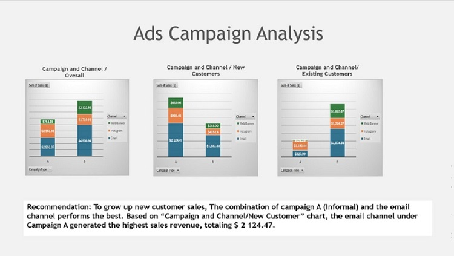
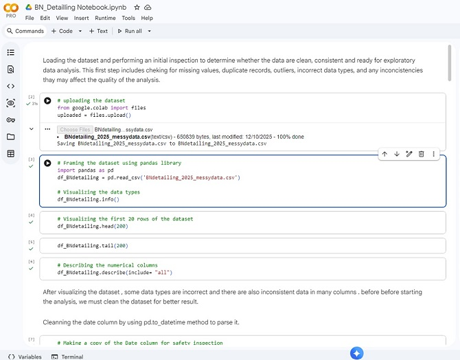
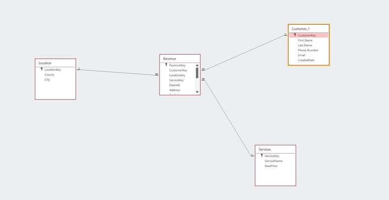
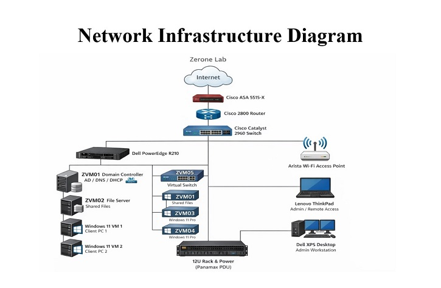

Welcome to my portfolio! Here, you will find a collection of some works and projects that showcase my skills and experience in the field of computer information technology, particularly in data management and analysis.
Data Analysis Projects
Project 1: Ads Campaign Analysis
In this project, I analyzed the performance of various channels for an advertising campaign.
I used data visualization techniques to identify trends and patterns in the data, and I provided
recommendations for optimizing the campaign based on my analysis.

Data Visualization for an Ads Campaign and Recommendations
Project 2: Revenue Analysis Dashboard
This project is an interactive Excel dashboard I built for a mobile detailing business.
It helps stakeholders monitor revenue performance and make better decisions using real data.
Revenue Analytics Dashboard
Project 3: Exploratory Data Analysis
This project focuses on data cleaning and exploratory data analysis using pandas and matplotlib
libraries using a synthetic dataset modeled after a mobile detailing business operations in
Sarasota and Charlotte Counties during 2025.

Sequence of Exploratory Data Analysis Code using Pandas and Matplotlib in Google Colab
Project 4: Database Design and Implementation
In this project, I designed and implemented a relational database for a mobile detailing business.
I created tables, relationships, and constraints to ensure data integrity and efficient querying.
In this design, we have three dimensions tables (Customer, Service, and Location) and one fact table (Revenue) to capture the details of each service transaction.
Each dimension table has a primary key that is referenced by the fact table to establish relationships and enable efficient querying for analysis and reporting purposes.
This primary key also serves as a unique identifier for each record to ensure data uniqueness and integrity following the process of normalization to eliminate data redundancy and ensure data integrity.

Database Relationship Diagram
Networking Configuration Projects
Project 1: Home Lab Network Configuration
In this project, I designed and implemented a home lab network infrastructure to support
various networking configurations and troubleshooting including hardware setup and software configuration.

Home Lab Network Configuration
Hardware Setup in a 12 U server rack
That is a real picture of the hardware setup in a 12 U server rack in my home lab. It includes a firewall, a switch, and a server running multiple virtual machines for various purposes such as network monitoring, data analysis, and web hosting.